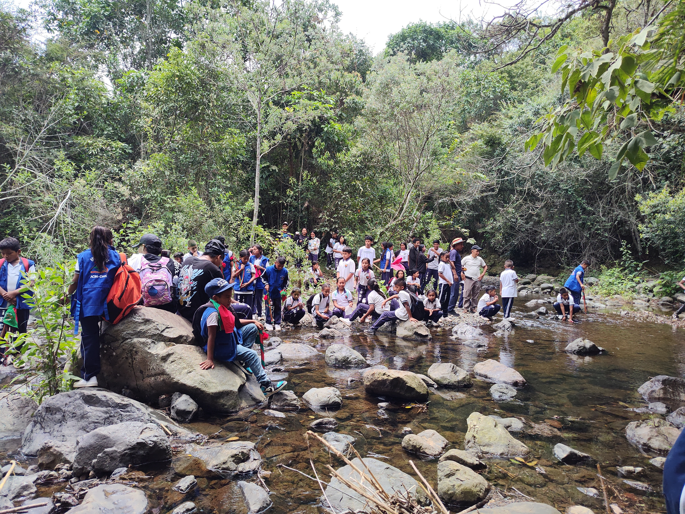
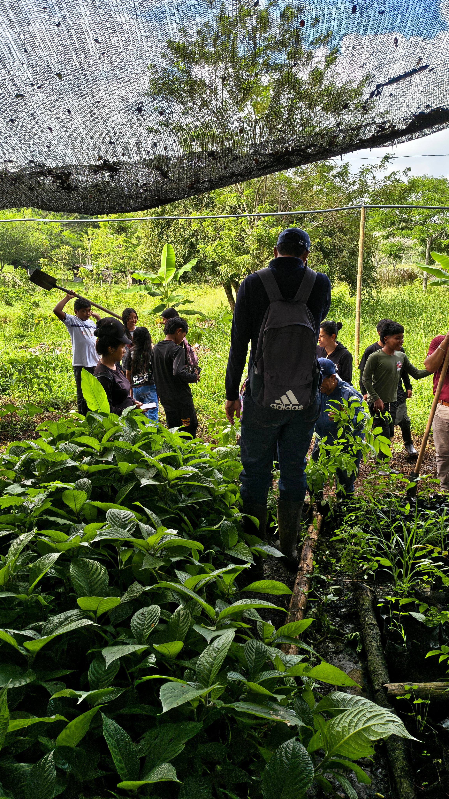
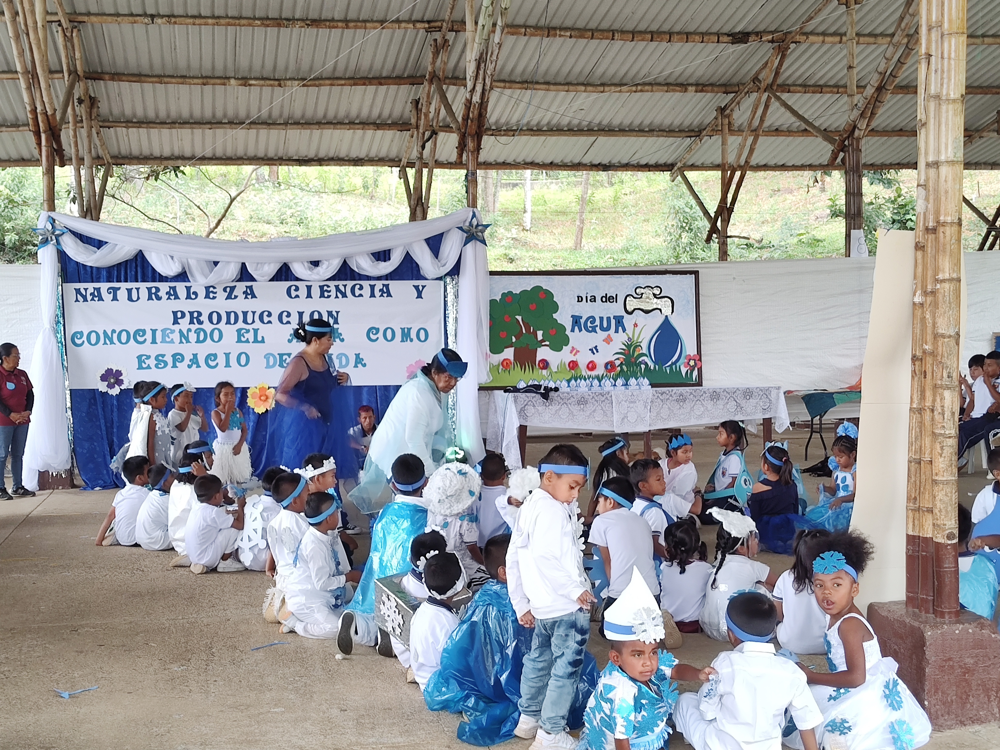
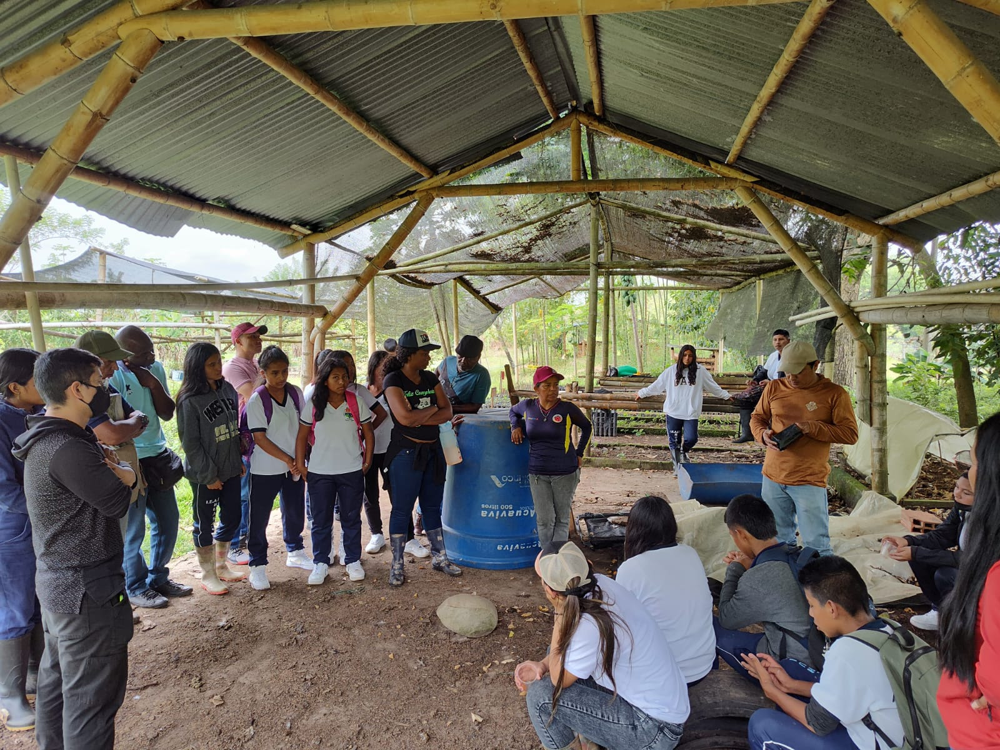
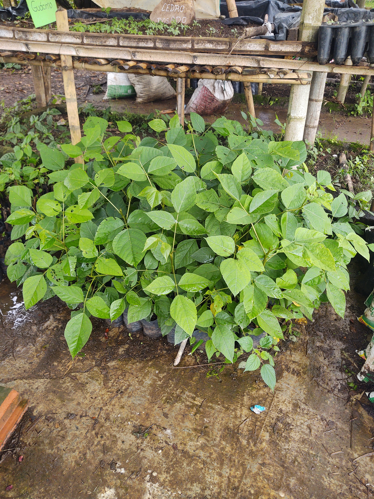

Vivero Escolar - I.E.E Tóez
Resguardo de Tóez
Caloto, Cauca
15 años
3.000 árboles
| Grupo | Cantidad |
|---|---|
| 👧 Niñas | 12 |
| 👦 Niños | 5 |
| 👩 Mujeres adultas | 1 |
| 👨 Hombres adultos | - |
| Total | 18 |
El vivero TOEZ constituye un espacio de educación propia y aprendizaje agroecológico que busca fortalecer la relación espiritual, cultural y productiva con la Madre Tierra. Su trabajo se fundamenta en la cosmovisión Nasa, promoviendo la conservación de la biodiversidad, la producción de material vegetal y la formación integral de los estudiantes en armonía con el territorio ancestral.
La historia del vivero escolar inició en el año 2010, cuando la institución comenzó a fortalecer procesos agroecológicos mediante alianzas con organizaciones e instituciones del territorio, entre ellas CORPOPALO.Aunque previamente ya existían prácticas de siembra y conservación, fue durante la rectoría del profesor Miguel Ángel Achipiz cuando se logró consolidar un espacio físico mediante la construcción de un cobertizo financiado con apoyo de la Gobernación del Cauca.
En 2011, la llegada de nuevos docentes y el fortalecimiento del trabajo conjunto con CORPOPALO permitieron desarrollar procesos de formación técnica y comunitaria, consolidando el vivero como una herramienta pedagógica para la educación ambiental y cultural.
Desde entonces, el vivero se ha mantenido como un espacio permanente de aprendizaje, producción y fortalecimiento de la identidad territorial.
El trabajo en el vivero se desarrolla principalmente con estudiantes de grado décimo, quienes participan semanalmente en jornadas de mantenimiento, propagación, preparación de sustratos y embolsado. Las actividades permiten aplicar conocimientos relacionados con:
El vivero se articula con procesos pedagógicos que integran teoría y práctica, fortaleciendo la formación de los estudiantes mediante experiencias directas con el territorio.
El vivero produce especies forestales, ornamentales y de interés ecológico para procesos de restauración, protección de fuentes hídricas y fortalecimiento de coberturas vegetales.
| Nombre Común | Nombre Cientifico |
|---|---|
| Nacedero | Trichanthera gigantea |
| Flor amarillo | Senna spectabilis |
| Chicalá | Tecoma stans |
| Cedro Rosado | Cedrela odorata |
| Guamo Perrero | Inga edulis |
| Leucaena | Leucaena leucochepala |
| Lechero rojo | Euphorbia cotinifilia |
| Gualanday | Jacaranda caucana |
| Guayacán Rosado | Tabebuia rosea |
| Guayacán amarillo | Handroanthus crhysantus |
| Guayacán de Manizales | Lafoensia acuminata |
| Sauce Costeño | Clitoria fairchildiana |




Responsable del proceso: Julia Estela Calambás
Rol: Docente dinamizadora
Teléfono: [TELEFONO]
Correo: [CORREO]